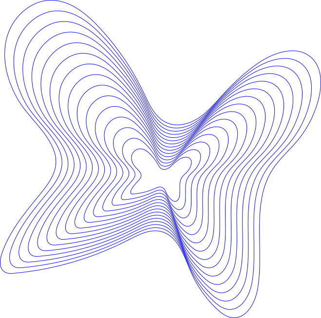

CREATIEVE
UITWISSELING
OP HET WEB
Creatieve uitwisseling op het web is het delen van
ideeën, werk of kennis via onlineplatformen en
gemeenschappen. Op het web kunnen mensen bijvoorbeeld hun
muziek, foto’s of design plaatsen. Ze kunnen uitleg geven
over hun werkwijze of een reactie geven op andermans
werk. Zo kan je inspiratie opdoen en kan je ook helpen
bij de creatieve werk en ontwikkeling van anderen.
Van inspiratie naar eigen creatie
Vaak ontstaan creatieve ideeën door bestaande ideeën te
combineren en aan te passen. Dat wordt met voorbeelden
in onder andere muziek en film uitgelegd in de
documentaire Everything Is a Remix. Creatief werk
bestaat vaak volgens Kirby Ferguson uit hergebruik,
verandering en combinatie van bestaande werk.
Online gemeenschappen
Op het web kan je elkaar vinden rond gedeelde
interesse, zoals een muziekgenre, kunstvorm of
bepaalde ontwerpsstijl. Dit kan in online
gemeenschappen. Zo kan je creaties delen, samenwerken
en van elkaar leren.
Meer over creatieve uitwisseling
Meer informatie over participatiecultuur: macfound.org
Van inspiratie naar eigen creatie — meer uitleg
Zo kan je in muziek bijvoorbeeld vaak fragmenten van bestaand materiaal gebruiken in een ander muziekstuk (sampling). Zo ontstaan door knippen, herhalen en combinaties van geluiden een nieuwe betekenis. Dit maakt dat de geluiden waar het fragment van afkomstig is opgenomen worden in iets anders. everythingisaremix.info
Online gemeenschappen — meer uitleg
Henry Jenkins en mede-auteurs, mediaonderzoekers, noemen dit een participatiecultuur. Hierin spelen mensen een actieve rol in het maken en verspreiden van media. Dit uit zich bijvoorbeeld in het delen van je eigen werk, betrokkenheid onderling of het overdragen van kennis van ervaren deelnemers aan beginners. macfound.org
Online gemeenschappen — meer uitleg
Een platform waar ideeën samenkomen en met elkaar verbinden is bijvoorbeeld Are.na. Hier kunnen mensen afbeeldingen, tekst, bestanden of webpagina's opslaan in collecties (channels). Dit kan alleen of samen met anderen. Door onderwerpen in verschillende collecties te plaatsen ontstaan op die manier misschien nieuwe verbindingen tussen onderwerpen. are.na
Verbinding tussen muziek, mode en ontwerp
Creatieve uitwisseling hoeft niet beperkt te blijven tot één kunstvorm. Muziek, mode, beeldende kunst en grafisch ontwerp komen bijvoorbeeld samen in albumhoezen, concertstijl en kleding.
Zo kan het bijvoorbeeld het werk van ontwerper Virgil Abloh zijn. Hij maakte onder andere albumhoezen, concerten, modecollecties en grafisch ontwerp. Ook werkte hij samen met kunstenaars en muzikanten, zoals Takashi Murakami en Kanye West. Volgens het Brooklyn Museum bouwde Abloh met zijn werk verbinding tussen muziek, mode, kunst en design. https://mcachicago.org/whats-on/exhibitions/virgil-abloh/
Kennis delen: FREE GAME
Naast inspiratie kunnen creatievelingen ook praktische kennis delen. Een goed voorbeeld hiervan is de online verzameling van informatie en tutorials FREE GAME, die Virgil Abloh compileerde voor mensen die een eigen merk willen starten.
Op de site staat informatie over onderwerpen als het verzinnen van een merknaam, werken met ontwerpprogramma's, zeefdrukken en het maken van een lookbook. Daarnaast zette Virgil Abloh er interviews op over zijn eigen werk en gedachten erbij. Hij beschreef het als een vorm van mentorschap, met extra aandacht voor zwarte makers en anderen die minder makkelijk de juiste kansen vinden in de creatieve sector. free-game.virgilabloh.com
Herkomst en hergebruik
De herkomst van creatieve content en de gebruiksvoorwaarden wanneer zij online worden gedeeld of bewerkt speelt ook een rol. Creative Commons is een systeem met licenties die makers vooraf laten bepalen in hoeverre anderen hun werk mogen gebruiken.
De voorwaarden verschillen per licentie. Sommige laten bewerkingen van het werk toe, anderen alleen het delen van het onveranderde werk. In alle zes Creative Commons-licenties is het vermelden van de maker een vereiste. Alleen een maker noemen wil dus niet zeggen dat het werk helemaal vrij hergebruikt mag worden. creativecommons.org
Toegang tot deelname
Online kunnen meedoen hangt niet alleen af van het hebben van een internetverbinding. Jenkins en zijn medeauteurs noemen ook de benodigde vaardigheden, begeleiding en de mogelijkheid om ervaring op te doen. Toegang tot de juiste digitale middelen hebben en daadwerkelijk kunnen deelnemen aan een creatieve gemeenschap zijn daarmee niet hetzelfde. macfound.org